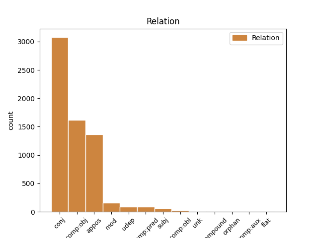
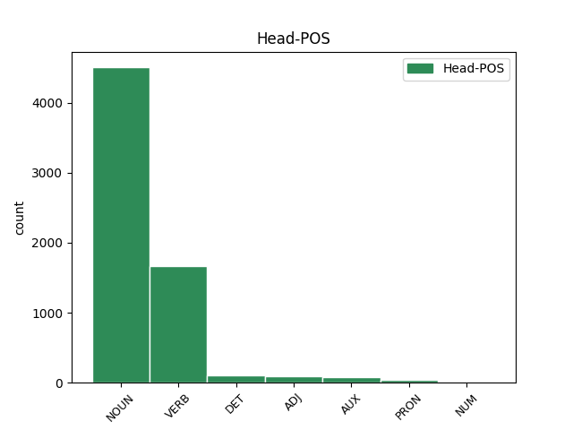
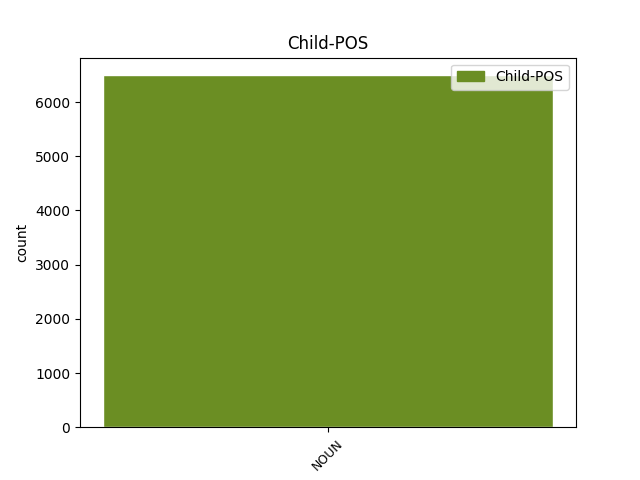

Distribution of features within this leaf



Agreement Rules sorted by frequency.
- When the dependent token is the conjunct(conj) of the head token, and the dependent token is NOUN.
1 L' _ _ _ _ 0 _ _ _
2 acte _ _ _ _ 0 _ _ _
3 xifra _ _ _ _ 0 _ _ _
4 l' _ _ _ _ 0 _ _ _
5 activitat _ _ _ _ 0 _ _ _
6 delictiva _ _ _ _ 0 _ _ _
7 d' _ _ _ _ 0 _ _ _
8 ETA _ _ _ _ 0 _ _ _
9 , _ _ _ _ 0 _ _ _
10 des _ _ _ _ 0 _ _ _
11 de _ _ _ _ 0 _ _ _
12 la _ _ _ _ 0 _ _ _
13 seva _ _ _ _ 0 _ _ _
14 creació _ _ _ _ 0 _ _ _
15 fins _ _ _ _ 0 _ _ _
16 a _ _ _ _ 0 _ _ _
17 l' _ _ _ _ 0 _ _ _
18 agost _ _ _ _ 0 _ _ _
19 del _ _ _ _ 0 _ _ _
20 2002 _ _ _ _ 0 _ _ _
21 , _ _ _ _ 0 _ _ _
22 en _ _ _ _ 0 _ _ _
23 3.391 _ _ _ _ 0 _ _ _
24 accions _ _ _ _ 0 _ _ _
25 terroristes _ _ _ _ 0 _ _ _
26 que _ _ _ _ 0 _ _ _
27 s' _ _ _ _ 0 _ _ _
28 han _ _ _ _ 0 _ _ _
29 saldat _ _ _ _ 0 _ _ _
30 amb _ _ _ _ 0 _ _ _
31 836 _ _ _ _ 0 _ _ _
32 morts mort NOUN NOUN Gender=Masc|Number=Plur 0 _ _ _
33 i _ _ _ _ 0 _ _ _
34 2.367 _ _ _ _ 0 _ _ _
35 ferits ferit NOUN NOUN Gender=Masc|Number=Plur 32 conj _ SpaceAfter=No
36 . _ _ _ _ 0 _ _ _
1 Segons _ _ _ _ 0 _ _ _
2 Garzón _ _ _ _ 0 _ _ _
3 , _ _ _ _ 0 _ _ _
4 les _ _ _ _ 0 _ _ _
5 primeres _ _ _ _ 0 _ _ _
6 les _ _ _ _ 0 _ _ _
7 formen _ _ _ _ 0 _ _ _
8 " _ _ _ _ 0 _ _ _
9 simpatitzants _ _ _ _ 0 _ _ _
10 o _ _ _ _ 0 _ _ _
11 militants _ _ _ _ 0 _ _ _
12 de _ _ _ _ 0 _ _ _
13 diferents _ _ _ _ 0 _ _ _
14 organitzacions _ _ _ _ 0 _ _ _
15 de _ _ _ _ 0 _ _ _
16 l' _ _ _ _ 0 _ _ _
17 MLNV _ _ _ _ 0 _ _ _
18 " _ _ _ _ 0 _ _ _
19 que _ _ _ _ 0 _ _ _
20 accedeixen _ _ _ _ 0 _ _ _
21 a _ _ _ _ 0 _ _ _
22 informació _ _ _ _ 0 _ _ _
23 d' _ _ _ _ 0 _ _ _
24 interès _ _ _ _ 0 _ _ _
25 mitjançant _ _ _ _ 0 _ _ _
26 la _ _ _ _ 0 _ _ _
27 seva _ _ _ _ 0 _ _ _
28 activitat activitat NOUN NOUN Gender=Fem|Number=Sing 0 _ _ _
29 laboral _ _ _ _ 0 _ _ _
30 , _ _ _ _ 0 _ _ _
31 la _ _ _ _ 0 _ _ _
32 localitat localitat NOUN NOUN Gender=Fem|Number=Sing 28 appos _ _
33 en _ _ _ _ 0 _ _ _
34 què _ _ _ _ 0 _ _ _
35 resideixen _ _ _ _ 0 _ _ _
36 , _ _ _ _ 0 _ _ _
37 o _ _ _ _ 0 _ _ _
38 infiltrats _ _ _ _ 0 _ _ _
39 que _ _ _ _ 0 _ _ _
40 realitzen _ _ _ _ 0 _ _ _
41 tasques _ _ _ _ 0 _ _ _
42 de _ _ _ _ 0 _ _ _
43 filmació _ _ _ _ 0 _ _ _
44 , _ _ _ _ 0 _ _ _
45 gravació _ _ _ _ 0 _ _ _
46 o _ _ _ _ 0 _ _ _
47 vigilància _ _ _ _ 0 _ _ _
48 . _ _ _ _ 0 _ _ _
1 El _ _ _ _ 0 _ _ _
2 PSOE _ _ _ _ 0 _ _ _
3 ha _ _ _ _ 0 _ _ _
4 criticat criticar VERB VERB Gender=Masc|Number=Sing|Tense=Past|VerbForm=Part 0 _ _ _
5 l' _ _ _ _ 0 _ _ _
6 anunci anunci NOUN NOUN Gender=Masc|Number=Sing 4 comp:obj _ _
7 de _ _ _ _ 0 _ _ _
8 la _ _ _ _ 0 _ _ _
9 designació _ _ _ _ 0 _ _ _
10 de _ _ _ _ 0 _ _ _
11 Lucas _ _ _ _ 0 _ _ _
12 , _ _ _ _ 0 _ _ _
13 que _ _ _ _ 0 _ _ _
14 dies _ _ _ _ 0 _ _ _
15 abans _ _ _ _ 0 _ _ _
16 va _ _ _ _ 0 _ _ _
17 fer _ _ _ _ 0 _ _ _
18 José _ _ _ _ 0 _ _ _
19 María _ _ _ _ 0 _ _ _
20 Aznar _ _ _ _ 0 _ _ _
21 , _ _ _ _ 0 _ _ _
22 perquè _ _ _ _ 0 _ _ _
23 entén _ _ _ _ 0 _ _ _
24 que _ _ _ _ 0 _ _ _
25 va _ _ _ _ 0 _ _ _
26 ser _ _ _ _ 0 _ _ _
27 una _ _ _ _ 0 _ _ _
28 falta _ _ _ _ 0 _ _ _
29 de _ _ _ _ 0 _ _ _
30 respecte _ _ _ _ 0 _ _ _
31 a _ _ _ _ 0 _ _ _
32 la _ _ _ _ 0 _ _ _
33 Cambra _ _ _ _ 0 _ _ _
34 . _ _ _ _ 0 _ _ _
1 Aquesta _ _ _ _ 0 _ _ _
2 matinada _ _ _ _ 0 _ _ _
3 encara _ _ _ _ 0 _ _ _
4 no _ _ _ _ 0 _ _ _
5 estava _ _ _ _ 0 _ _ _
6 clar _ _ _ _ 0 _ _ _
7 si _ _ _ _ 0 _ _ _
8 es _ _ _ _ 0 _ _ _
9 tractava _ _ _ _ 0 _ _ _
10 d' _ _ _ _ 0 _ _ _
11 una _ _ _ _ 0 _ _ _
12 furgoneta furgoneta NOUN NOUN Gender=Fem|Number=Sing 0 _ _ _
13 bomba bomba NOUN NOUN Gender=Fem|Number=Sing 12 mod _ _
14 o _ _ _ _ 0 _ _ _
15 bé _ _ _ _ 0 _ _ _
16 si _ _ _ _ 0 _ _ _
17 el _ _ _ _ 0 _ _ _
18 vehicle _ _ _ _ 0 _ _ _
19 només _ _ _ _ 0 _ _ _
20 transportava _ _ _ _ 0 _ _ _
21 els _ _ _ _ 0 _ _ _
22 explosius _ _ _ _ 0 _ _ _
23 per _ _ _ _ 0 _ _ _
24 ser _ _ _ _ 0 _ _ _
25 utilitzats _ _ _ _ 0 _ _ _
26 posteriorment _ _ _ _ 0 _ _ _
27 . _ _ _ _ 0 _ _ _
1 Per _ _ _ _ 0 _ _ _
2 països _ _ _ _ 0 _ _ _
3 , _ _ _ _ 0 _ _ _
4 el _ _ _ _ 0 _ _ _
5 resultat _ _ _ _ 0 _ _ _
6 corresponent _ _ _ _ 0 _ _ _
7 a _ _ _ _ 0 _ _ _
8 Espanya _ _ _ _ 0 _ _ _
9 els _ _ _ _ 0 _ _ _
10 primers _ _ _ _ 0 _ _ _
11 tres _ _ _ _ 0 _ _ _
12 mesos _ _ _ _ 0 _ _ _
13 de _ _ _ _ 0 _ _ _
14 l' _ _ _ _ 0 _ _ _
15 any _ _ _ _ 0 _ _ _
16 va _ _ _ _ 0 _ _ _
17 ser _ _ _ _ 0 _ _ _
18 un _ _ _ _ 0 _ _ _
19 increment _ _ _ _ 0 _ _ _
20 del _ _ _ _ 0 _ _ _
21 3,4% _ _ _ _ 0 _ _ _
22 , _ _ _ _ 0 _ _ _
23 enfront _ _ _ _ 0 _ _ _
24 del _ _ _ _ 0 _ _ _
25 2,4% _ _ _ _ 0 _ _ _
26 del _ _ _ _ 0 _ _ _
27 trimestre _ _ _ _ 0 _ _ _
28 anterior _ _ _ _ 0 _ _ _
29 i _ _ _ _ 0 _ _ _
30 de _ _ _ _ 0 _ _ _
31 l' _ _ _ _ 0 _ _ _
32 1,8% _ _ _ _ 0 _ _ _
33 registrat registrat ADJ ADJ Gender=Masc|Number=Sing|VerbForm=Part 0 _ _ _
34 el _ _ _ _ 0 _ _ _
35 primer _ _ _ _ 0 _ _ _
36 trimestre trimestre NOUN NOUN Gender=Masc|Number=Sing 33 udep _ _
37 del _ _ _ _ 0 _ _ _
38 1999 _ _ _ _ 0 _ _ _
39 . _ _ _ _ 0 _ _ _
1 En _ _ _ _ 0 _ _ _
2 el _ _ _ _ 0 _ _ _
3 primer _ _ _ _ 0 _ _ _
4 cas _ _ _ _ 0 _ _ _
5 , _ _ _ _ 0 _ _ _
6 hauria _ _ _ _ 0 _ _ _
7 estat ser AUX AUX Gender=Masc|Number=Sing|Tense=Past|VerbForm=Part 0 _ _ _
8 el _ _ _ _ 0 _ _ _
9 primer _ _ _ _ 0 _ _ _
10 atemptat atemptat NOUN NOUN Gender=Masc|Number=Sing 7 comp:pred _ _
11 terrorista _ _ _ _ 0 _ _ _
12 després _ _ _ _ 0 _ _ _
13 del _ _ _ _ 0 _ _ _
14 procés _ _ _ _ 0 _ _ _
15 obert _ _ _ _ 0 _ _ _
16 per _ _ _ _ 0 _ _ _
17 a _ _ _ _ 0 _ _ _
18 la _ _ _ _ 0 _ _ _
19 il·legalització _ _ _ _ 0 _ _ _
20 de _ _ _ _ 0 _ _ _
21 Batasuna _ _ _ _ 0 _ _ _
22 i _ _ _ _ 0 _ _ _
23 de _ _ _ _ 0 _ _ _
24 la _ _ _ _ 0 _ _ _
25 suspensió _ _ _ _ 0 _ _ _
26 de _ _ _ _ 0 _ _ _
27 les _ _ _ _ 0 _ _ _
28 activitats _ _ _ _ 0 _ _ _
29 de _ _ _ _ 0 _ _ _
30 la _ _ _ _ 0 _ _ _
31 coalició _ _ _ _ 0 _ _ _
32 abertzale _ _ _ _ 0 _ _ _
33 per _ _ _ _ 0 _ _ _
34 part _ _ _ _ 0 _ _ _
35 del _ _ _ _ 0 _ _ _
36 jutge _ _ _ _ 0 _ _ _
37 de _ _ _ _ 0 _ _ _
38 l' _ _ _ _ 0 _ _ _
39 Audiència _ _ _ _ 0 _ _ _
40 Nacional _ _ _ _ 0 _ _ _
41 Baltasar _ _ _ _ 0 _ _ _
42 Garzón _ _ _ _ 0 _ _ _
43 . _ _ _ _ 0 _ _ _
1 Una _ _ _ _ 0 _ _ _
2 vegada _ _ _ _ 0 _ _ _
3 estabilitzada estabilitzar VERB VERB Gender=Fem|Number=Sing|Tense=Past|VerbForm=Part 0 _ _ _
4 en _ _ _ _ 0 _ _ _
5 part _ _ _ _ 0 _ _ _
6 la _ _ _ _ 0 _ _ _
7 situació situació NOUN NOUN Gender=Fem|Number=Sing 3 subj _ _
8 del _ _ _ _ 0 _ _ _
9 club _ _ _ _ 0 _ _ _
10 , _ _ _ _ 0 _ _ _
11 la _ _ _ _ 0 _ _ _
12 plantilla _ _ _ _ 0 _ _ _
13 reprendrà _ _ _ _ 0 _ _ _
14 avui _ _ _ _ 0 _ _ _
15 mateix _ _ _ _ 0 _ _ _
16 els _ _ _ _ 0 _ _ _
17 entrenaments _ _ _ _ 0 _ _ _
18 a _ _ _ _ 0 _ _ _
19 les _ _ _ _ 0 _ _ _
20 ordres _ _ _ _ 0 _ _ _
21 de _ _ _ _ 0 _ _ _
22 Pepe _ _ _ _ 0 _ _ _
23 Mel _ _ _ _ 0 _ _ _
24 , _ _ _ _ 0 _ _ _
25 que _ _ _ _ 0 _ _ _
26 continuarà _ _ _ _ 0 _ _ _
27 com _ _ _ _ 0 _ _ _
28 a _ _ _ _ 0 _ _ _
29 tècnic _ _ _ _ 0 _ _ _
30 del _ _ _ _ 0 _ _ _
31 Mèrida _ _ _ _ 0 _ _ _
32 aquesta _ _ _ _ 0 _ _ _
33 temporada _ _ _ _ 0 _ _ _
34 . _ _ _ _ 0 _ _ _
1 El _ _ _ _ 0 _ _ _
2 conveni conveni NOUN NOUN Gender=Masc|Number=Sing 5 comp:obl _ _
3 l' _ _ _ _ 0 _ _ _
4 han _ _ _ _ 0 _ _ _
5 signat signar VERB VERB Gender=Masc|Number=Sing|Tense=Past|VerbForm=Part 0 _ _ _
6 el _ _ _ _ 0 _ _ _
7 rector _ _ _ _ 0 _ _ _
8 de _ _ _ _ 0 _ _ _
9 la _ _ _ _ 0 _ _ _
10 URV _ _ _ _ 0 _ _ _
11 , _ _ _ _ 0 _ _ _
12 Lluís _ _ _ _ 0 _ _ _
13 Arola _ _ _ _ 0 _ _ _
14 , _ _ _ _ 0 _ _ _
15 el _ _ _ _ 0 _ _ _
16 conseller _ _ _ _ 0 _ _ _
17 delegat _ _ _ _ 0 _ _ _
18 de _ _ _ _ 0 _ _ _
19 Scytl _ _ _ _ 0 _ _ _
20 , _ _ _ _ 0 _ _ _
21 Andreu _ _ _ _ 0 _ _ _
22 Riera _ _ _ _ 0 _ _ _
23 , _ _ _ _ 0 _ _ _
24 i _ _ _ _ 0 _ _ _
25 el _ _ _ _ 0 _ _ _
26 Dr. _ _ _ _ 0 _ _ _
27 Josep _ _ _ _ 0 _ _ _
28 Domingo _ _ _ _ 0 _ _ _
29 . _ _ _ _ 0 _ _ _
1 En _ _ _ _ 0 _ _ _
2 la _ _ _ _ 0 _ _ _
3 hipòtesi _ _ _ _ 0 _ _ _
4 que _ _ _ _ 0 _ _ _
5 l' _ _ _ _ 0 _ _ _
6 homosexualitat _ _ _ _ 0 _ _ _
7 sigui _ _ _ _ 0 _ _ _
8 natural _ _ _ _ 0 _ _ _
9 , _ _ _ _ 0 _ _ _
10 jo _ _ _ _ 0 _ _ _
11 em _ _ _ _ 0 _ _ _
12 nego _ _ _ _ 0 _ _ _
13 a _ _ _ _ 0 _ _ _
14 admetre _ _ _ _ 0 _ _ _
15 que _ _ _ _ 0 _ _ _
16 Déu _ _ _ _ 0 _ _ _
17 l' _ _ _ _ 0 _ _ _
18 hagi _ _ _ _ 0 _ _ _
19 volgut _ _ _ _ 0 _ _ _
20 establir _ _ _ _ 0 _ _ _
21 com _ _ _ _ 0 _ _ _
22 una _ _ _ _ 0 _ _ _
23 tendència tendència NOUN NOUN Gender=Fem|Number=Sing 0 _ _ _
24 ( _ _ _ _ 0 _ _ _
25 pulsió pulsió NOUN NOUN Gender=Fem|Number=Sing 23 unk _ _
26 i _ _ _ _ 0 _ _ _
27 actes _ _ _ _ 0 _ _ _
28 concrets _ _ _ _ 0 _ _ _
29 inclosos _ _ _ _ 0 _ _ _
30 ) _ _ _ _ 0 _ _ _
31 perversa _ _ _ _ 0 _ _ _
32 i _ _ _ _ 0 _ _ _
33 sí _ _ _ _ 0 _ _ _
34 que _ _ _ _ 0 _ _ _
35 m' _ _ _ _ 0 _ _ _
36 inclino _ _ _ _ 0 _ _ _
37 que _ _ _ _ 0 _ _ _
38 s' _ _ _ _ 0 _ _ _
39 hauria _ _ _ _ 0 _ _ _
40 d' _ _ _ _ 0 _ _ _
41 admetre _ _ _ _ 0 _ _ _
42 que _ _ _ _ 0 _ _ _
43 la _ _ _ _ 0 _ _ _
44 sexualitat _ _ _ _ 0 _ _ _
45 humana _ _ _ _ 0 _ _ _
46 , _ _ _ _ 0 _ _ _
47 biofísicament _ _ _ _ 0 _ _ _
48 parlant _ _ _ _ 0 _ _ _
49 , _ _ _ _ 0 _ _ _
50 no _ _ _ _ 0 _ _ _
51 és _ _ _ _ 0 _ _ _
52 només _ _ _ _ 0 _ _ _
53 heterosexual _ _ _ _ 0 _ _ _
54 , _ _ _ _ 0 _ _ _
55 sinó _ _ _ _ 0 _ _ _
56 que _ _ _ _ 0 _ _ _
57 també _ _ _ _ 0 _ _ _
58 és _ _ _ _ 0 _ _ _
59 homosexual _ _ _ _ 0 _ _ _
60 . _ _ _ _ 0 _ _ _
1 Obra obra NOUN NOUN Gender=Fem|Number=Sing 0 _ _ _
2 de _ _ _ _ 0 _ _ _
3 l' _ _ _ _ 0 _ _ _
4 escriptora _ _ _ _ 0 _ _ _
5 britànica _ _ _ _ 0 _ _ _
6 Joanne _ _ _ _ 0 _ _ _
7 Kathleen _ _ _ _ 0 _ _ _
8 Rowling _ _ _ _ 0 _ _ _
9 , _ _ _ _ 0 _ _ _
10 la _ _ _ _ 0 _ _ _
11 sèrie sèrie NOUN NOUN Gender=Fem|Number=Sing 1 flat _ _
12 ha _ _ _ _ 0 _ _ _
13 venut _ _ _ _ 0 _ _ _
14 ja _ _ _ _ 0 _ _ _
15 80 _ _ _ _ 0 _ _ _
16 milions _ _ _ _ 0 _ _ _
17 d' _ _ _ _ 0 _ _ _
18 exemplars _ _ _ _ 0 _ _ _
19 a _ _ _ _ 0 _ _ _
20 tot _ _ _ _ 0 _ _ _
21 el _ _ _ _ 0 _ _ _
22 món _ _ _ _ 0 _ _ _
23 en _ _ _ _ 0 _ _ _
24 tres _ _ _ _ 0 _ _ _
25 anys _ _ _ _ 0 _ _ _
26 . _ _ _ _ 0 _ _ _
1 En _ _ _ _ 0 _ _ _
2 primera _ _ _ _ 0 _ _ _
3 fila _ _ _ _ 0 _ _ _
4 , _ _ _ _ 0 _ _ _
5 contrabaixos _ _ _ _ 0 _ _ _
6 , _ _ _ _ 0 _ _ _
7 primers _ _ _ _ 0 _ _ _
8 violins violí NOUN NOUN Gender=Masc|Number=Plur 0 _ _ _
9 , _ _ _ _ 0 _ _ _
10 violoncels _ _ _ _ 0 _ _ _
11 , _ _ _ _ 0 _ _ _
12 violes _ _ _ _ 0 _ _ _
13 i _ _ _ _ 0 _ _ _
14 segons _ _ _ _ 0 _ _ _
15 violins violí NOUN NOUN Gender=Masc|Number=Plur 8 orphan _ SpaceAfter=No
16 , _ _ _ _ 0 _ _ _
17 amb _ _ _ _ 0 _ _ _
18 els _ _ _ _ 0 _ _ _
19 timbals _ _ _ _ 0 _ _ _
20 al _ _ _ _ 0 _ _ _
21 darrere _ _ _ _ 0 _ _ _
22 . _ _ _ _ 0 _ _ _
Disagree Examples:
1 El _ _ _ _ 0 _ _ _
2 Tribunal _ _ _ _ 0 _ _ _
3 Suprem _ _ _ _ 0 _ _ _
4 ( _ _ _ _ 0 _ _ _
5 TS _ _ _ _ 0 _ _ _
6 ) _ _ _ _ 0 _ _ _
7 ha _ _ _ _ 0 _ _ _
8 confirmat confirmar VERB VERB Gender=Masc|Number=Sing|Tense=Past|VerbForm=Part 0 _ _ _
9 la _ _ _ _ 0 _ _ _
10 condemna condemna NOUN NOUN Gender=Fem|Number=Sing 8 comp:obj _ _
11 a _ _ _ _ 0 _ _ _
12 quatre _ _ _ _ 0 _ _ _
13 anys _ _ _ _ 0 _ _ _
14 d' _ _ _ _ 0 _ _ _
15 inhabilitació _ _ _ _ 0 _ _ _
16 especial _ _ _ _ 0 _ _ _
17 i _ _ _ _ 0 _ _ _
18 una _ _ _ _ 0 _ _ _
19 multa _ _ _ _ 0 _ _ _
20 de _ _ _ _ 0 _ _ _
21 3,6 _ _ _ _ 0 _ _ _
22 milions _ _ _ _ 0 _ _ _
23 de _ _ _ _ 0 _ _ _
24 pessetes _ _ _ _ 0 _ _ _
25 per _ _ _ _ 0 _ _ _
26 a _ _ _ _ 0 _ _ _
27 quatre _ _ _ _ 0 _ _ _
28 veterinaris _ _ _ _ 0 _ _ _
29 gironins _ _ _ _ 0 _ _ _
30 , _ _ _ _ 0 _ _ _
31 per _ _ _ _ 0 _ _ _
32 haver _ _ _ _ 0 _ _ _
33 se _ _ _ _ 0 _ _ _
34 beneficiat _ _ _ _ 0 _ _ _
35 dels _ _ _ _ 0 _ _ _
36 càrrecs _ _ _ _ 0 _ _ _
37 públics _ _ _ _ 0 _ _ _
38 que _ _ _ _ 0 _ _ _
39 desenvolupaven _ _ _ _ 0 _ _ _
40 i _ _ _ _ 0 _ _ _
41 la _ _ _ _ 0 _ _ _
42 seva _ _ _ _ 0 _ _ _
43 relació _ _ _ _ 0 _ _ _
44 amb _ _ _ _ 0 _ _ _
45 les _ _ _ _ 0 _ _ _
46 empreses _ _ _ _ 0 _ _ _
47 càrniques _ _ _ _ 0 _ _ _
48 de _ _ _ _ 0 _ _ _
49 la _ _ _ _ 0 _ _ _
50 zona _ _ _ _ 0 _ _ _
51 en _ _ _ _ 0 _ _ _
52 oferir _ _ _ _ 0 _ _ _
53 los _ _ _ _ 0 _ _ _
54 serveis _ _ _ _ 0 _ _ _
55 particulars _ _ _ _ 0 _ _ _
56 . _ _ _ _ 0 _ _ _
1 El _ _ _ _ 0 _ _ _
2 Tribunal _ _ _ _ 0 _ _ _
3 Suprem _ _ _ _ 0 _ _ _
4 ( _ _ _ _ 0 _ _ _
5 TS _ _ _ _ 0 _ _ _
6 ) _ _ _ _ 0 _ _ _
7 ha _ _ _ _ 0 _ _ _
8 confirmat _ _ _ _ 0 _ _ _
9 la _ _ _ _ 0 _ _ _
10 condemna _ _ _ _ 0 _ _ _
11 a _ _ _ _ 0 _ _ _
12 quatre _ _ _ _ 0 _ _ _
13 anys any NOUN NOUN Gender=Masc|Number=Plur 0 _ _ _
14 d' _ _ _ _ 0 _ _ _
15 inhabilitació _ _ _ _ 0 _ _ _
16 especial _ _ _ _ 0 _ _ _
17 i _ _ _ _ 0 _ _ _
18 una _ _ _ _ 0 _ _ _
19 multa multa NOUN NOUN Gender=Fem|Number=Sing 13 conj _ _
20 de _ _ _ _ 0 _ _ _
21 3,6 _ _ _ _ 0 _ _ _
22 milions _ _ _ _ 0 _ _ _
23 de _ _ _ _ 0 _ _ _
24 pessetes _ _ _ _ 0 _ _ _
25 per _ _ _ _ 0 _ _ _
26 a _ _ _ _ 0 _ _ _
27 quatre _ _ _ _ 0 _ _ _
28 veterinaris _ _ _ _ 0 _ _ _
29 gironins _ _ _ _ 0 _ _ _
30 , _ _ _ _ 0 _ _ _
31 per _ _ _ _ 0 _ _ _
32 haver _ _ _ _ 0 _ _ _
33 se _ _ _ _ 0 _ _ _
34 beneficiat _ _ _ _ 0 _ _ _
35 dels _ _ _ _ 0 _ _ _
36 càrrecs _ _ _ _ 0 _ _ _
37 públics _ _ _ _ 0 _ _ _
38 que _ _ _ _ 0 _ _ _
39 desenvolupaven _ _ _ _ 0 _ _ _
40 i _ _ _ _ 0 _ _ _
41 la _ _ _ _ 0 _ _ _
42 seva _ _ _ _ 0 _ _ _
43 relació _ _ _ _ 0 _ _ _
44 amb _ _ _ _ 0 _ _ _
45 les _ _ _ _ 0 _ _ _
46 empreses _ _ _ _ 0 _ _ _
47 càrniques _ _ _ _ 0 _ _ _
48 de _ _ _ _ 0 _ _ _
49 la _ _ _ _ 0 _ _ _
50 zona _ _ _ _ 0 _ _ _
51 en _ _ _ _ 0 _ _ _
52 oferir _ _ _ _ 0 _ _ _
53 los _ _ _ _ 0 _ _ _
54 serveis _ _ _ _ 0 _ _ _
55 particulars _ _ _ _ 0 _ _ _
56 . _ _ _ _ 0 _ _ _
1 Pel _ _ _ _ 0 _ _ _
2 que _ _ _ _ 0 _ _ _
3 fa _ _ _ _ 0 _ _ _
4 al _ _ _ _ 0 _ _ _
5 coneixement _ _ _ _ 0 _ _ _
6 de _ _ _ _ 0 _ _ _
7 la _ _ _ _ 0 _ _ _
8 il·licitud _ _ _ _ 0 _ _ _
9 de _ _ _ _ 0 _ _ _
10 la _ _ _ _ 0 _ _ _
11 seva _ _ _ _ 0 _ _ _
12 acció _ _ _ _ 0 _ _ _
13 , _ _ _ _ 0 _ _ _
14 l' _ _ _ _ 0 _ _ _
15 alt _ _ _ _ 0 _ _ _
16 tribunal _ _ _ _ 0 _ _ _
17 sosté _ _ _ _ 0 _ _ _
18 que _ _ _ _ 0 _ _ _
19 ' _ _ _ _ 0 _ _ _
20 és _ _ _ _ 0 _ _ _
21 evident _ _ _ _ 0 _ _ _
22 que _ _ _ _ 0 _ _ _
23 són _ _ _ _ 0 _ _ _
24 universitaris _ _ _ _ 0 _ _ _
25 , _ _ _ _ 0 _ _ _
26 amb _ _ _ _ 0 _ _ _
27 un _ _ _ _ 0 _ _ _
28 estàndard _ _ _ _ 0 _ _ _
29 de _ _ _ _ 0 _ _ _
30 coneixements _ _ _ _ 0 _ _ _
31 d' _ _ _ _ 0 _ _ _
32 acord _ _ _ _ 0 _ _ _
33 amb _ _ _ _ 0 _ _ _
34 la _ _ _ _ 0 _ _ _
35 seva _ _ _ _ 0 _ _ _
36 especialitat _ _ _ _ 0 _ _ _
37 ' _ _ _ _ 0 _ _ _
38 i _ _ _ _ 0 _ _ _
39 afegeix _ _ _ _ 0 _ _ _
40 que _ _ _ _ 0 _ _ _
41 ' _ _ _ _ 0 _ _ _
42 des _ _ _ _ 0 _ _ _
43 d' _ _ _ _ 0 _ _ _
44 aquesta _ _ _ _ 0 _ _ _
45 realitat _ _ _ _ 0 _ _ _
46 no _ _ _ _ 0 _ _ _
47 és _ _ _ _ 0 _ _ _
48 acceptable _ _ _ _ 0 _ _ _
49 defensar _ _ _ _ 0 _ _ _
50 que _ _ _ _ 0 _ _ _
51 no _ _ _ _ 0 _ _ _
52 tenien _ _ _ _ 0 _ _ _
53 la _ _ _ _ 0 _ _ _
54 consciència _ _ _ _ 0 _ _ _
55 de _ _ _ _ 0 _ _ _
56 la _ _ _ _ 0 _ _ _
57 il·licitud _ _ _ _ 0 _ _ _
58 de _ _ _ _ 0 _ _ _
59 la _ _ _ _ 0 _ _ _
60 seva _ _ _ _ 0 _ _ _
61 acció _ _ _ _ 0 _ _ _
62 , _ _ _ _ 0 _ _ _
63 ja _ _ _ _ 0 _ _ _
64 que _ _ _ _ 0 _ _ _
65 això _ _ _ _ 0 _ _ _
66 forma _ _ _ _ 0 _ _ _
67 part _ _ _ _ 0 _ _ _
68 del _ _ _ _ 0 _ _ _
69 nivell _ _ _ _ 0 _ _ _
70 mitjà _ _ _ _ 0 _ _ _
71 de _ _ _ _ 0 _ _ _
72 coneixements coneixement NOUN NOUN Gender=Masc|Number=Plur 0 _ _ _
73 i _ _ _ _ 0 _ _ _
74 sensibilitats sensibilitat NOUN NOUN Gender=Fem|Number=Plur 72 conj _ _
75 atribuïdes _ _ _ _ 0 _ _ _
76 a _ _ _ _ 0 _ _ _
77 la _ _ _ _ 0 _ _ _
78 generalitat _ _ _ _ 0 _ _ _
79 de _ _ _ _ 0 _ _ _
80 persones _ _ _ _ 0 _ _ _
81 que _ _ _ _ 0 _ _ _
82 estan _ _ _ _ 0 _ _ _
83 en _ _ _ _ 0 _ _ _
84 aquesta _ _ _ _ 0 _ _ _
85 situació _ _ _ _ 0 _ _ _
86 ' _ _ _ _ 0 _ _ _
87 . _ _ _ _ 0 _ _ _
1 Els _ _ _ _ 0 _ _ _
2 treballadors _ _ _ _ 0 _ _ _
3 han _ _ _ _ 0 _ _ _
4 iniciat iniciar VERB VERB Gender=Masc|Number=Sing|Tense=Past|VerbForm=Part 0 _ _ _
5 aquesta _ _ _ _ 0 _ _ _
6 matinada matinada NOUN NOUN Gender=Fem|Number=Sing 4 udep _ _
7 una _ _ _ _ 0 _ _ _
8 vaga _ _ _ _ 0 _ _ _
9 indefinida _ _ _ _ 0 _ _ _
10 dels _ _ _ _ 0 _ _ _
11 serveis _ _ _ _ 0 _ _ _
12 de _ _ _ _ 0 _ _ _
13 neteja _ _ _ _ 0 _ _ _
14 viària _ _ _ _ 0 _ _ _
15 i _ _ _ _ 0 _ _ _
16 recollida _ _ _ _ 0 _ _ _
17 d' _ _ _ _ 0 _ _ _
18 escombraries _ _ _ _ 0 _ _ _
19 . _ _ _ _ 0 _ _ _
1 Els _ _ _ _ 0 _ _ _
2 treballadors _ _ _ _ 0 _ _ _
3 han _ _ _ _ 0 _ _ _
4 iniciat iniciar VERB VERB Gender=Masc|Number=Sing|Tense=Past|VerbForm=Part 0 _ _ _
5 aquesta _ _ _ _ 0 _ _ _
6 matinada _ _ _ _ 0 _ _ _
7 una _ _ _ _ 0 _ _ _
8 vaga vaga NOUN NOUN Gender=Fem|Number=Sing 4 comp:obj _ _
9 indefinida _ _ _ _ 0 _ _ _
10 dels _ _ _ _ 0 _ _ _
11 serveis _ _ _ _ 0 _ _ _
12 de _ _ _ _ 0 _ _ _
13 neteja _ _ _ _ 0 _ _ _
14 viària _ _ _ _ 0 _ _ _
15 i _ _ _ _ 0 _ _ _
16 recollida _ _ _ _ 0 _ _ _
17 d' _ _ _ _ 0 _ _ _
18 escombraries _ _ _ _ 0 _ _ _
19 . _ _ _ _ 0 _ _ _